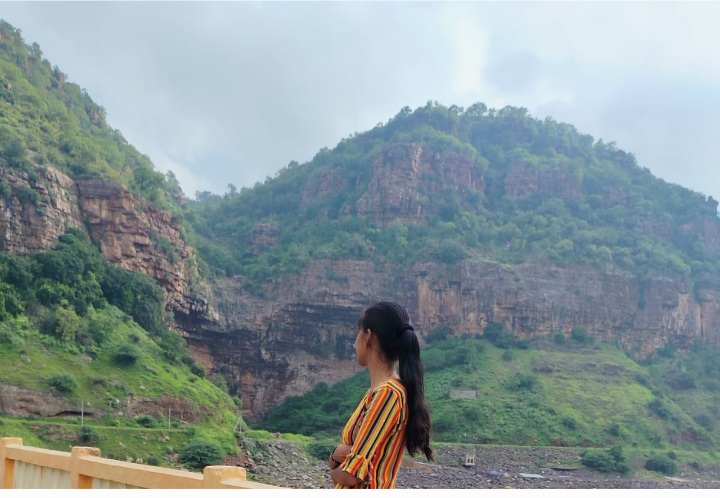

Email: vishwakanya28@gmail.com
Mobile: +91 9403373568
Address: Latur, Maharashtra
GitHub: https://github.com/CodingModi
LinkedIn: linkedin.com/in/vishwakanyamodi
A passionate Computer Engineering student seeking an opportunity to work in a growth-oriented organization where I can utilize my technical knowledge, improve my programming skills, and contribute to innovative software development projects.
| Qualification | Institute / School | Board / University | Year | Percentage / CGPA |
|---|---|---|---|---|
| SSC (10th) | Your School Name | Maharashtra State Board | 2024 | 88% |
| Diploma in Computer Engineering | Swami Vivekanand Institute of Polytechnic, Latur | MSBTE | 2027 | 90% |
Web Development Intern
Completed a 3-month internship at Ingenious Techno Hub, Latur.
Developed a web-based application to manage hostel student records, room allocation, fees, complaints, and hostel details efficiently.
Technologies Used: HTML, CSS, JavaScript, SQL
Designed a hotel management system for room booking, customer registration, billing, and check-in/check-out management.
Technologies Used: HTML, CSS, JavaScript
Name: Vishwakanya Modi
Date of Birth: 31 July 2008
Gender: Female
Nationality: Indian
Father's Name: Shrikant Modi
Mother's Name: Shivakanta Modi
Marital Status: Unmarried
I hereby declare that all the information mentioned above is true and correct to the best of my knowledge and belief.
Place: Latur
Date:
______________
Signature
________________